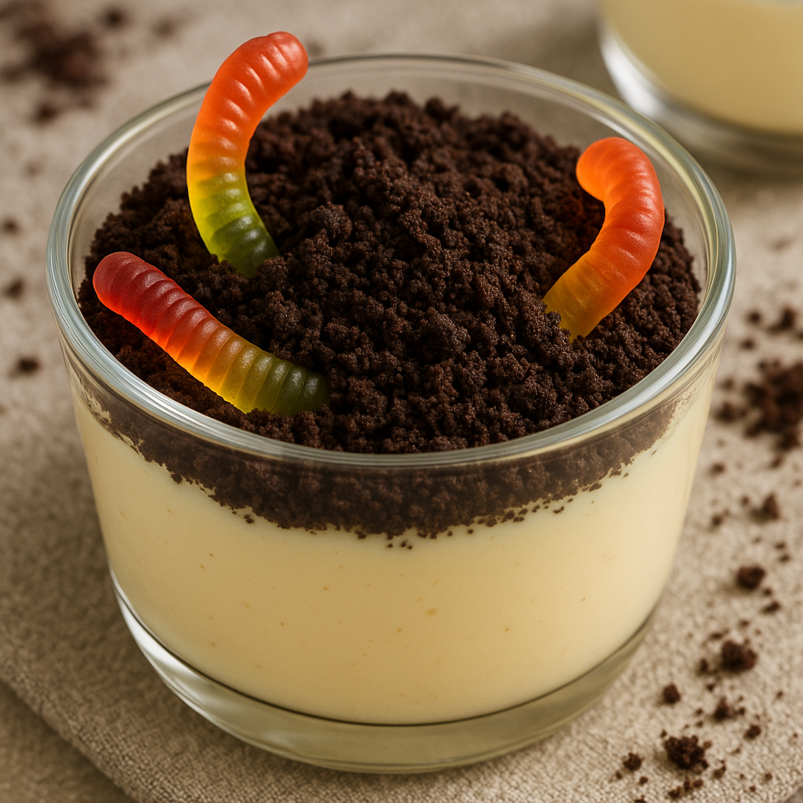

Dirt Recipe
Home

Vanilla Dirt Dessert with gummy worms
Vanilla Dirt Dessert is a delicious treat made with pudding and Oreos.
It is a fun, sugary option for birthdays and other celebrations.
This recipe is from an old family friend back in the 1900s. It has
withstood the test of time as a wonderful and tasty family tradition.
Ingredients
- 16oz (at least) of crushed Oreos
- 8oz Cream Cheese
- 1 stick margarine
- 1 tsp vanilla
- 2 pkgs vanilla pudding (big pkgs)
- 1/2 c. conf sugar
- 3 c. milk
- 12 oz cool whip
Instructions
- Cream butter, sugar, cream cheese
- Add pudding, milk, and vanilla on low speed (BEWARE OF SPLASH)
- Fold in cool whip by hand
- Line pot w/ some oreos
- Layer-alternate filling with oreos
- Final layer should be oreos
- Chill in fridge at least 6 hrs.
- Put a flower in pot! Serve!